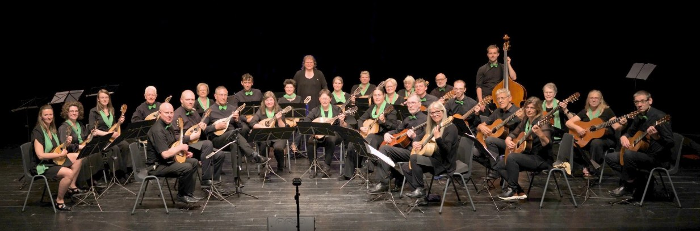

Fijnbesnaard Orkest

Zacht speelt de mandoline een melodie. Een herinnering streelt mijn hart, honingzoet met een bitter akkoord. Melancholie…..

Zacht speelt de mandoline een melodie. Een herinnering streelt mijn hart, honingzoet met een bitter akkoord. Melancholie…..